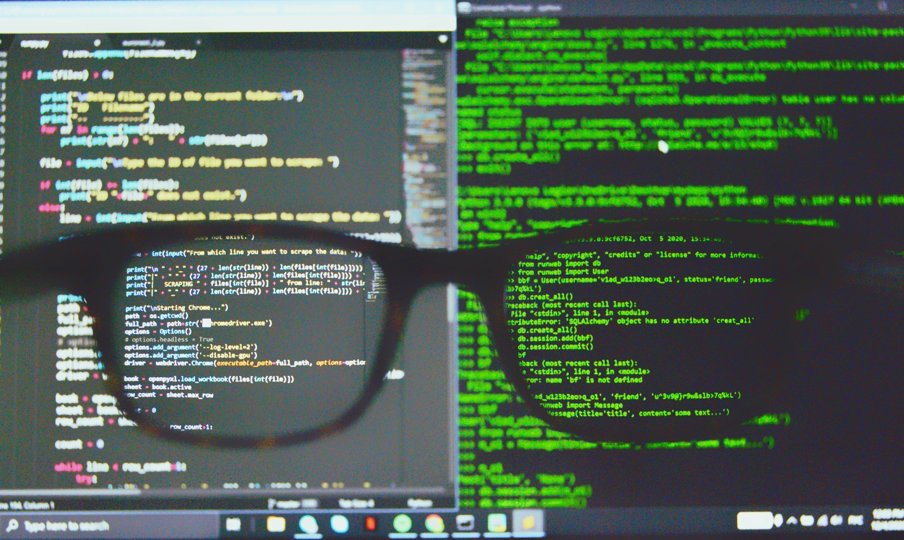

안녕하세요 앞으로 여러분과 함께 bandit 문제를 해결 할 아산고등학교 1학년 나윤호입니다.
저는 제가 아는 워게임중에 리눅스 입문자를 위해 만들어진 Bandit 이라는 워게임을 풀어보고
내가 푼 문제들을 다른사람들에게 설명을 하고 그 설명 또한 웹페이지로 만들어 본다면
제 실력향상에 도움이 되겠다고 생각되어서 실적물로 워게임 풀이 설명을 선택했습니다.
이 워게임은 총 34개의 레벨로 이루어져있습니다.
그럼 지금부터 제가 처음 워게임을 풀면서 헤쳐나갔던 과정들을 함께 살펴봅시다.
(제 실적물에 나오는 스크린샷을 제외한 모든 사진은 저작권에 구애받지 않고 사용할 수 있는 unsplash.com이라는 사이트에서 가져왔습니다.)
